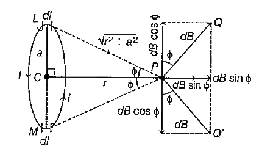
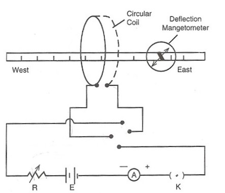

What are we measuring?
- Determine Earth's horizontal intensity of magnetic field using a circular coil.
- Study the variation of magnetic field with distance along the axis of a current-carrying circular coil.
Equipment
From current to a measurable magnetic field
A current-carrying conductor produces a magnetic field. The manual develops the experiment from Biot–Savart's law: the field contribution from a small current element depends on the current, the element length, the angle it makes with the line to the observation point, and the inverse square of the distance.
For a circular coil, the components of the field perpendicular to the coil axis cancel pairwise because of symmetry. The axial components add. For a coil of radius r, carrying current I through n turns, at an axial distance x from its centre, the field is:
At the centre of the coil, x = 0, so the field becomes:
This axial-field expression is the standard result for a circular current loop: the field is directed along the loop axis and decreases as the observation point is moved away from the centre.
Connecting the coil field with Earth's field
In the experimental arrangement, the magnetic field produced by the coil is made perpendicular to the horizontal component of Earth's magnetic field. The compass needle therefore aligns with the resultant of these two mutually perpendicular fields.
Here B0 is the notation used in the laboratory manual for Earth's horizontal magnetic field and θ is the mean compass deflection. This is the tangent-law step that converts an observed angular deflection into a magnetic-field value.
These chapters develop the magnetic field of a current loop from the Biot–Savart law and provide the electromagnetic background needed to understand the tangent-law measurement.
Magnetic field of a current-carrying circular coil

Field at an axial point due to a small current element of the circular coil, illustrating the Biot–Savart construction used to obtain the axial magnetic field.

Experimental arrangement for studying the magnetic field produced by a current-carrying circular coil along its axis using a deflection magnetometer.
See the circular coil experiment in action
Watch a laboratory demonstration of the circular coil experiment, including compass deflection, current reversal, and determination of Earth’s horizontal component of magnetic field (Bh), matching the procedure used in this experiment.
Experimental sequence
- Fix the circular coil at the middle of the platform and place the compass box at the centre of the coil.
- Rotate the compass box until its 90–90 line becomes parallel to the plane of the coil.
- Rotate the apparatus as a whole until the aluminium pointer reads 0–0.
- Close the circuit and adjust the rheostat so that the compass deflection lies between about 30° and 60°. Record the current and deflection.
- Reverse the current through the coil using the commutator and record the new deflection.
- Average the magnitudes of the two deflections and calculate the magnetic field at the centre of the coil.
- Without changing the current or number of turns, place the compass box at a chosen distance from the centre. Record the deflection, reverse the current, and record the second deflection.
- Repeat the measurement on the opposite side of the coil at the same distance.
- Average the readings from the two sides to obtain the mean deflection θ.
- Calculate Bₓ from the circular-coil equation and then determine B₀ from B₀ = Bₓ / tan θ.
- Repeat for several distances and plot Bₓ against x.
Enter your actual readings
| Distance x (cm) | Left side | Right side | Mean θ (°) | Bₓ (T) | B₀ = Bₓ/tanθ (T) | ||||||
|---|---|---|---|---|---|---|---|---|---|---|---|
| Direct | Reversed | Direct | Reversed | ||||||||
| θ₁ (°) | θ₂ (°) | θ₁ (°) | θ₂ (°) | θ₁ (°) | θ₂ (°) | θ₁ (°) | θ₂ (°) | ||||
From deflection to Earth's field
Graph: Bₓ on the vertical axis versus axial distance x on the horizontal axis. The dashed curve is the theoretical circular-coil dependence using the entered I, n, r and μ₀.
Experimental result
The horizontal intensity of Earth's magnetic field at the experimental location is obtained from the mean of the calculated B₀ values. The variation of the magnetic field produced by the circular coil along its axis is studied by plotting Bₓ against distance x.